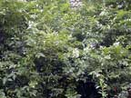
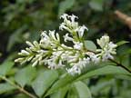
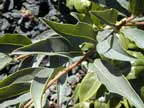
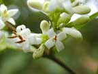
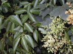

Privet
Ligustrum species
Other names
Description
Evergreen shrub up to 5m. Oval shaped dark green leaves (some cultivars variegated with yellow edges). Small white flowers in a panicle. Fruit a black berry c 6mm dia but not often produced.
Similar plants
There are 4 naturalised species in NZ. L. ovalifolium (pictured)
is probably most common.
L. lucidum, the tree privet, and L. sinense, the Chinese
privet, are locally common around Auckland; L. vulgare, the "common"
privet, is naturalised in parts of the S. Island.
Distribution
An escape from cultivation where it is traditionally grown for hedges because it clips well.
Toxin
Ligustrin, a glycoside. Berries are thought to be most toxic, but the leaves have caused problems too, usually as hedge clippings thrown into a paddock. The pollen is popularly supposed to cause hay fever or asthma in people, but this seems unlikely as the bushes are pollinated by insects rather than broadcasting pollen.
Species affected
Cattle, sheep, horses and children.
Clinical signs acute
Acute toxicity causes dullness, colic, diarrhoea, weakness, ataxia, mydriasis, trembling, bradycardia, hypotension, salivation and sometimes paralysis. Chronic toxicity due to eating of large quantities over a long period causes dermatitis of the lower limbs but it has not been reported in New Zealand. Other signs include depression, loss of appetite, sleepiness, rise in temperature, nausea, diarrhoea and dilation of the pupils.
Clinical signs chronic
Horses colic and unsteady gait / hind leg paralysis, rapid pulse, congested mucous membranes, dilated pupils, followed by death 4 48 hours later. Sheep and cattle have been found dead. Children vomiting, diarrhoea ± dermatitis.
Post mortem signs
Non specific intense gastro enteritis.
Diagnosis
History, clinical signs, plant material in the stomach/rumen.
Differential diagnosis
Treatment
Symptomatic.
Prognosis
Poisoning is rare but often fatal.
Prevention
Take care with disposal of hedge clippings.
References
Anonymous, Accidental poisonings of stock. NZ Journal of Agriculture, 1939, 59, 429 431
Conner H.E. The Poisonous Plants In New Zealand. 1992. GP Publications Ltd, Wellington
Cooper M R, Johnson A W. Poisonous Plants and Fungi in Britan: Animals and Human Poisoning. Her Majesty’s Stationary Office. London. 1998
Parton K, Bruere A.N. and Chambers J.P. Veterinary Clinical Toxicology, 2nd ed. 2001. Veterinary Continuing Education Publication No. 208
|  overgrown hedge |
 |
|
|
 |
 |
|
|
|
||
|
 |
|
|